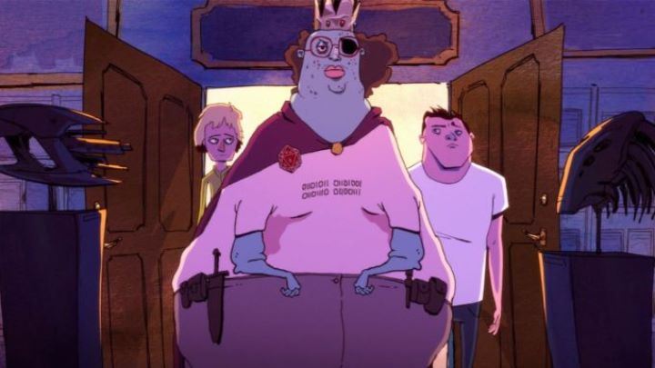

I first saw "Nerdland" at the Ottawa International Animation Festival in 2016. I recall it being one of the few English-language features in competition, the only comedy, and the only feature from the USA. For these reasons and its premise, I suspected it would be the biggest hit with audiences at the festival, and I wasn't wrong: the audience had a great time at the showing. I also expected it would be one of the worst received from critics at the festival, and also wasn't wrong. There seems to be an original American Seth-MacFarlane-esque direct-to-DVD film every few years, so there must be an audience for them. If you are in the mood for that kind of comedy, "Nerdland" might come off as original enough to have a special place in your heart. But not everyone likes that type of low-brow modern humor, and such people will think this is unacceptable entertainment.The film never mentions why it is called "Nerdland," presumably because it centers around a duo of losers in Los-Angeles, one an aspiring actor and the other a screenwriting hopeful, neither good enough at their job to ever make a living off of their creativity. Both turning 30 and desparate to claim the popularity and fame they've chased for so long, they make up the film's plot of trying one scheme after another trying to become famous by the end of the day. I will take note that never does the film ever explain the term "Nerd," and the only character who slightly resembles a nerd comes across more as a geek, and I am certain most nerds would find this film (and its suggestion that all wannabe-unpopular-nobody's are "nerds") offensive. Anyway, the adventure goes from bad to worse for the two leads, with each path questioning modern society and what it deems to be suitable for popularity. It starts with making online videos, to trying to unsuccessfully start a murder spree. It sounds ridiculous, and that's part of the humor. The plot questions the nature of fame with each of its ideas, almost being a successful commentary on society, but remains in its sphere of comedy before going too deep into philosophical. ... which means it does little to nothing. The comedy is crude and raunchy: within the first five minutes, we see a kindly old-woman drop by and catch one of the lead men mid-masterbation with a blow-up doll, and get a uncensored shot of a butthole of the second male. Nudity, violence and otherwise offensive jokes and imagery isn't off-limits here. Some of the jokes and scenarios are clever, IF you can stomach it. But I would have been more impressed if it could commit to lampooning social media and click-bait news a little further. There was potential to make a film that said something important as well as make a immature teenager laugh. So then why did I buy the Bluray? Yes, "Nerdland" got a home-video release, and was the only film from the 2016 OIAF feature competition to get one in North America (footnote: also in competition, the dark-fantasy Spanish-film "Psiconautas: The Forgetten Children" would be confirmed to get its own release in 2018), from Sony Pictures no less, usually known for being more selective in its animation releases (notably this was NOT part of its "Sony Pictures Classics" line). I bought the film to give it a second chance, and becuase I remembered the animation to be impressive at the time when I saw it in a theater. The animation was done by Studio Titmouse, a fan-favorite for its similarly raunchy Adult-Swin shows that nonetheless made it a well known international animation house. Upon seeing it again, I can confrim the visuals are stylistic, unique, and overwhelmingly ugly. The animation helps improve the movie, but only slightly, being at its best when it merges 3D graphics into its 2D animation (a great example of "Toon-Boom" software demo reel material), which it does seemlessly and with ambition but only does so for less than 30 seconds-worth of the movie. The music is garish and loud. The only high-point of the production is the English voice-cast, well-fit with stars that nearly carry the film on their own.  The reason I give "Nerdland" any points at all is because it so fearlessly owns its choices. It knows its humor isn't meant for kids. It knows it isn't serious enough to be critiqued. It knows its character designs are ugly. But it maintains that from start to finish, and you can't help but keep watching to simply see what happens next in this farce. For those reasons, I aruge it is worth watching, if only once. It's a shame that animation is so connected to child-friendly or adult-accomdating comedy in the minds of Americans. Despite all the art that comes through in this medium, movies like "Nerdland" are certain to be first to get a chance with the country. If you belong to the crowd who thinks this sounds like a good time, by all means enjoy the film. Don't let nerds like me ruin the fun for you.
- "Ani" More reviews can be found at : https://2danicritic.github.io/ Previous review: review_Neon_Genesis_Evangelion_-_The_End_of_Evangelion Next review: review_New_Cutie_Honey